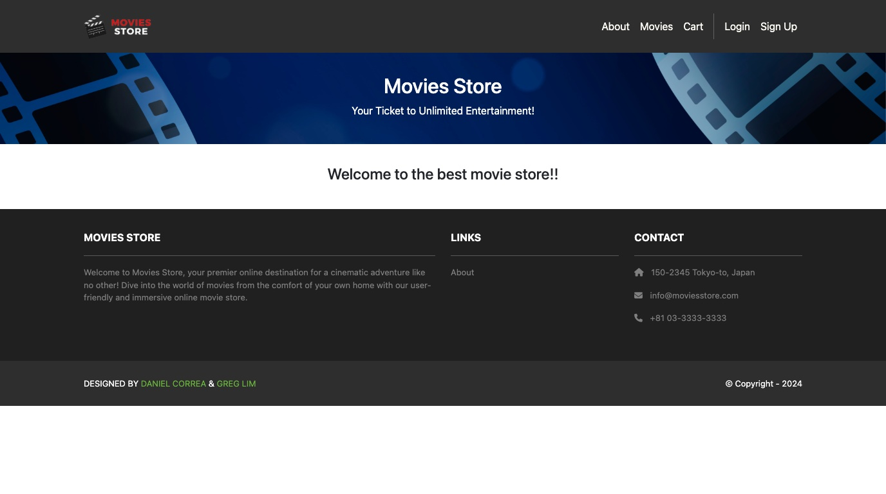

GT Movies Store
A Django storefront where you can browse a catalogue, write and edit reviews, fill a cart and check out. Built over 4 sessions and deployed to PythonAnywhere.

Read the case studyI study computer science at Georgia Tech, concentrating in cybersecurity and AI — and I like building things end to end, from data model to deployment.
I'm a computer science student at the Georgia Institute of Technology. Most of what I build is on the web, and I like the part of the work where a data model, a set of routes and an interface finally agree with each other.
I'm concentrating in Cybersecurity & Privacy and Artificial Intelligence, and outside of class I work as a research assistant at Georgia Tech, tracing blockchain transactions to study cryptocurrency theft. Right now I'm in CS 2340, Objects & Design, where the emphasis is less on making something run and more on being able to say why it's built the way it is.
2026